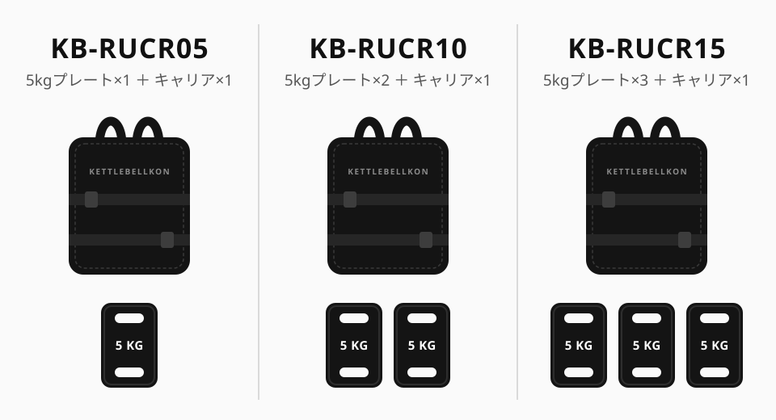
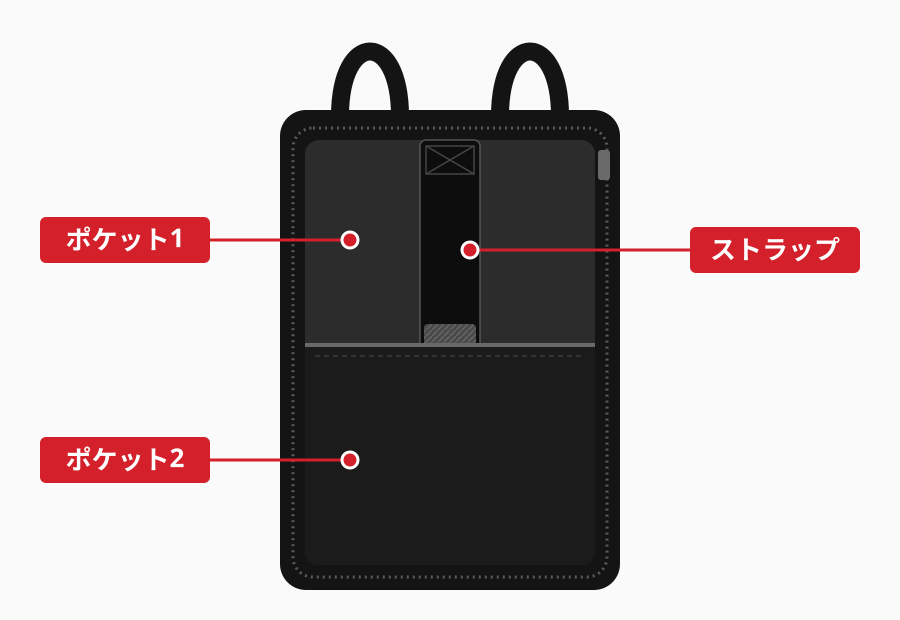
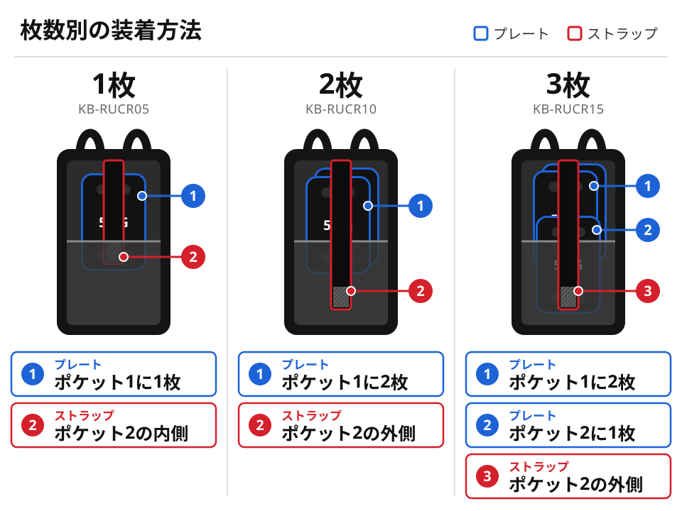
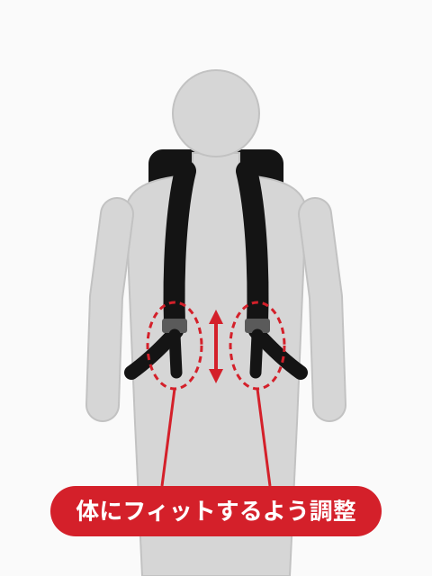
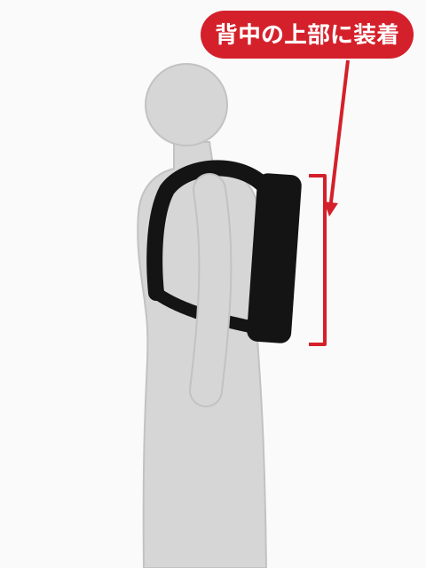
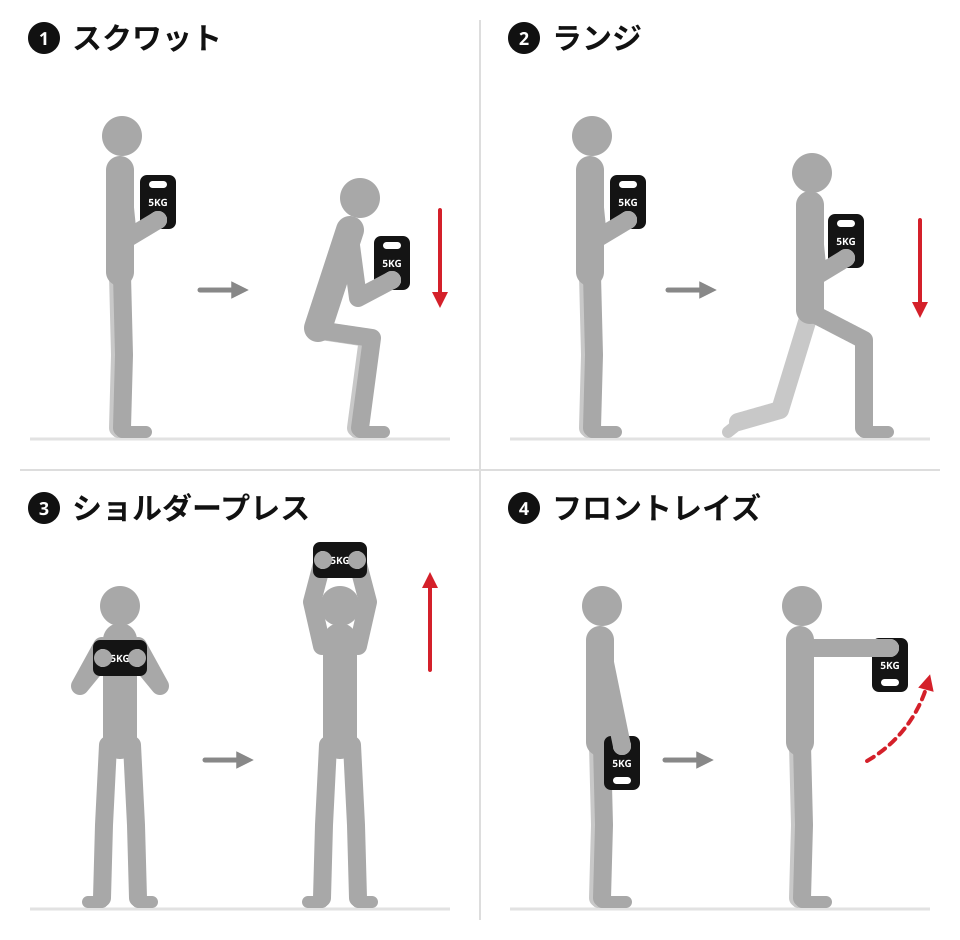

KETTLEBELLKON
ラッキングプレート キャリア
取扱説明書 / USER GUIDE対象型番: KB-RUCR05 / KB-RUCR10 / KB-RUCR15
01はじめにINTRODUCTION
このたびは KETTLEBELLKON ラッキングプレート キャリアをお買い上げいただき、ありがとうございます。
ご使用前に本書をよくお読みのうえ、正しくお使いください。
02安全にお使いいただくためにSAFETY
- プレートは重量物です。落下や衝突に十分注意してください。
- お子様やペットが近くにいる場所では使用しないでください。
- キャリアには KETTLEBELLKON ラッキングプレート以外のものを入れないでください。
- 健康状態に不安がある方は、使用前に医師にご相談ください。
- 使用中に体調や製品の異常を感じた場合は、すぐに使用を中止してください。
03梱包内容PACKAGE CONTENTS
お買い上げの型番により、プレートの枚数が異なります。


-
KB-RUCR05
- 5kgプレート
- × 1
- キャリア
- × 1
-
KB-RUCR10
- 5kgプレート
- × 2
- キャリア
- × 1
-
KB-RUCR15
- 5kgプレート
- × 3
- キャリア
- × 1
04プレートの装着方法INSERTING PLATES
キャリア内側の各部名称

- ポケット1
- プレートを入れるポケット
- ポケット2
- プレートを入れるポケット（3枚使用時）
- ストラップ
- プレートを固定するストラップ
枚数別の装着方法


-
1プレート 1枚
- プレートをポケット1に入れます。
- ストラップをポケット2の内側で固定します。
固定するときは、プレートを下に押さえながら行ってください。
-
2プレート 2枚
- プレート2枚をどちらもポケット1に入れます。
- ストラップをポケット2の外側で固定します。
固定するときは、プレートを下に押さえながら行ってください。
-
3プレート 3枚
- プレート2枚をポケット1に入れます。
- 残りの1枚をポケット2に入れます。
- ストラップをポケット2の外側で固定します。
固定するときは、プレートを下に押さえながら行ってください。
05キャリア装着時のポイントFIT
- 2本のストラップを調整して、キャリアを体にフィットさせてください。
- キャリアを背中の上部に位置させると、揺れを抑えられます。


06使用前・使用後のお手入れCARE
- 使用前
- プレートにひび割れがないか確認してください。
- 使用後
- プレートとキャリアの水分を拭き取り、乾かしてください。
07保管についてSTORAGE
湿気の多い場所や、結露しやすい場所での保管は避けてください。
08ラッキングプレートの活用例EXERCISES
ラッキングプレートは、キャリアに入れずに単体でもお使いいただけます。


- スクワット
- ランジ
- ショルダープレス
- フロントレイズ